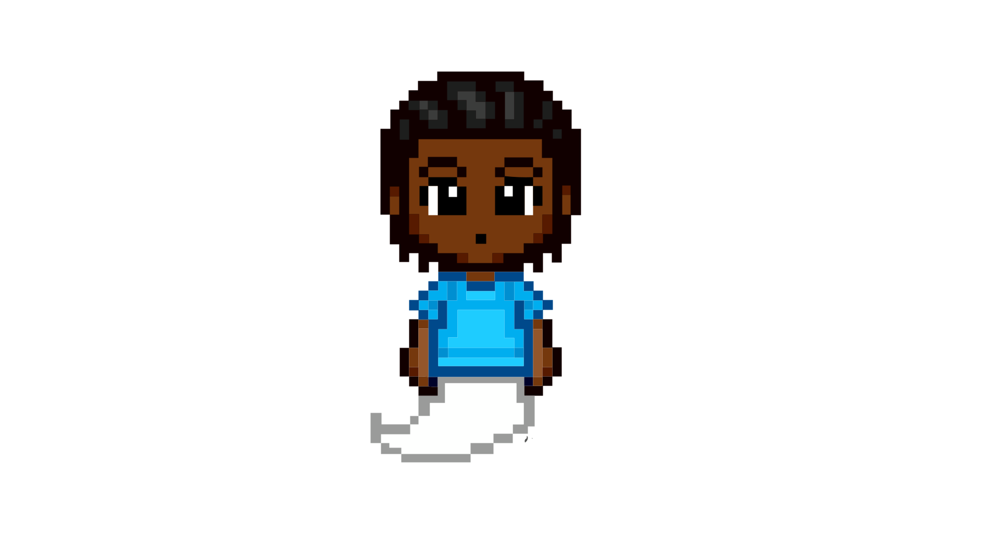
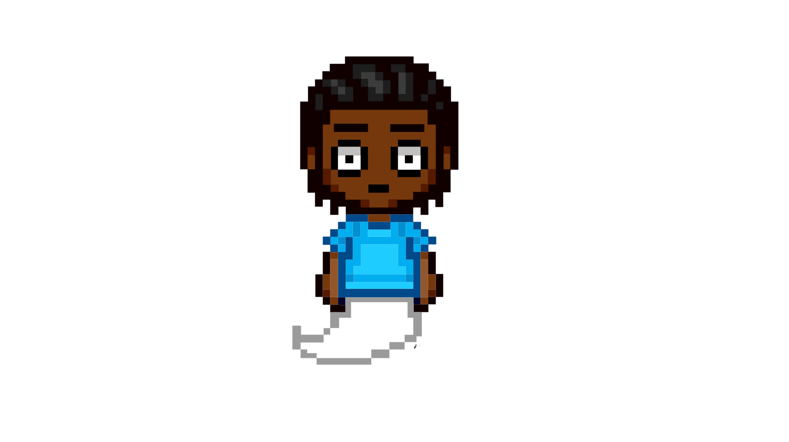
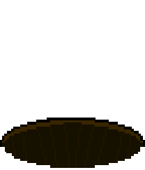

Durant une nuit très silencieuse dans une forêt, une maison avait encore ses lumières ouvertes...
Andy dort paisiblement dans sa chambre
Soudainement le corps d'andy agit de façon étrange et son esprit sort de son corps
Andy sort de chez lui et explore les environs en quête de réponses

Andy croise un montre bizarre qui veut l'attaquer

Après avoir échapper au monstre il decide de continer sa marche lorsque...

IL TOMBE DANS UN TUNNEL PROFOND!!!!!
Andy se reveille dans son corps et se rend compte que tout cela était un malheureux rêve... Ou peut-être pas.